.png)
[2401] 투자전략센터
아이디어를 전략으로,
전략을 실행으로
[2401] 투자전략센터는 시뮬레이션을 통해 선물 · 옵션 투자 전략을 직접 설계하고, 전략에 따라 원하는 종목으로 포트폴리오를 자유롭게 구성하고 주문까지 접수 가능한 화면입니다.
본 화면의 장점은 실제로 매매를 실행하기 전 전략을 점검해볼 수 있다는 점입니다.
만기 손익, 내재 변동성 추이 등 다양한 요소를 미리 확인해볼 수 있고, 보유중인 잔고에 포지션을 추가하거나 청산하여 새로운 조합이나 변경된 전략을 테스트하는 실험실로 활용할 수 있습니다.
전략 시뮬레이션, 포트폴리오 구성, 주문을 동시에
이 화면이 편리한 이유!
| 특징 | 이런 점이 좋아요 |
|---|---|
| 다양한 전략 테스트 환경 | 시장 상황별 기본 전략부터 직접 만드는 전략까지 폭넓은 시뮬레이션 지원 |
| 전략별 포트폴리오 자동 생성 | 특정 종목을 지정하거나 설정한 조건에 맞는 종목을 자동 선택 |
| 구성 종목 일괄 주문 연계 | 전략에 맞게 선택된 구성 종목을 한 번에 주문으로 연결 |
| 잔고 및 예수금 조회 | 가용자산을 신속하게 점검하고 상황에 맞는 주문 전략 선택 |
설정은 빠르게, 검증은 간결하게
01 기본 화면 구성
LS증권의 [2401] 투자전략센터 화면은 한 화면에서 전략과 포트폴리오를 구성할 수 있습니다.
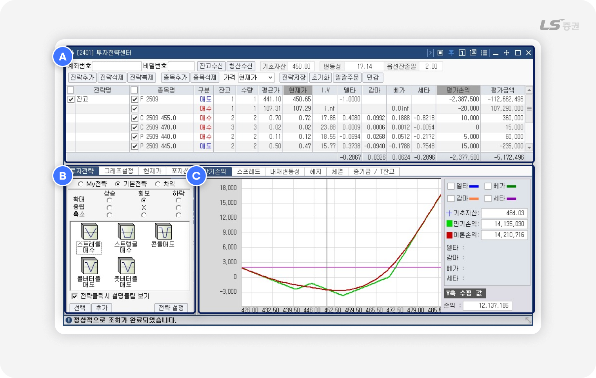
화면은 다음과 같이 3개의 영역으로 나누어져 있으며, 다양한 정보를 조회하고 투자전략과 포트폴리오를 시뮬레이션하는 동시에 주문도 접수할 수 있도록 배치되어 있습니다.
| 번호 | 영역 | 주요기능 |
|---|---|---|
| A | 포트폴리오 구성 영역 | 전략 및 구성 종목을 관리하고 주문할 수 있습니다. |
| B | 전략 설정 영역 | 전략을 설정하고, 구성 종목 시세 정보와 포지션을 점검할 수 있습니다. |
| C | 시뮬레이션 영역 | 시뮬레이션 결과를 확인하고, 주문 체결 현황 및 계좌 현황을 조회할 수 있습니다. |
자유롭게 전략의 청사진을 그리는,
02 포트폴리오 구성 (A영역)
잔고수신 기능
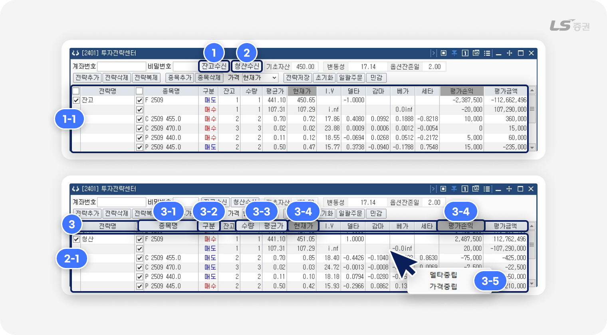
-
1
잔고수신
- 버튼 클릭 시 전략명 ‘잔고’와 선물옵션 계좌의 보유 포지션을 포트폴리오 구성 영역(1-1번)에 추가합니다.
-
2
청산수신
- 버튼 클릭 시 전략명 ‘청산’와 선물옵션 계좌의 청산 포지션을 포트폴리오 구성 영역(2-1번)에 추가합니다.
-
3
전략 및 종목 조회 및 관리
- (3-1번) 종목명 더블클릭 시 파생상품 종목안내 팝업에서 종목을 선택 및 변경할 수 있습니다.
- (3-2번) 매수/매도 구분 클릭 시 매수 / 매도가 전환됩니다.
- (3-3번) 수량 및 평균가 클릭 시 값을 수정할 수 있습니다.
- (3-4번) 회색 영역 항목 클릭 시 현재가 / 평가손익, 이론가 / 이론손익, 만기가 / 만기손익을 전환 조회할 수 있습니다.
-
(3-5번) 목록에서 마우스 우클릭으로 전략에 따른 종목별 수량을 변경할 수 있습니다.
- 1) 델타중립 : 선택한 종목의 수량을 그 종목이 속해있는 전략의 델타를 0과 가장 가깝게 하는 값으로 변경
- 2) 가격중립 : 선택한 종목의 수량을 그 종목이 속해있는 전략의 매도-매수대금의 값을 0과 가장 가깝게 하는 값으로 변경
델타 중립 전략과 가격 중립 전략이란?
델타 중립 전략- 기초자산 가격 변화에 따른 손익구조를 중립화시키는 전략으로, 가격 변동에 따른 방향성 리스크를 줄이고 변동성, 시간 경과 등에 따른 수익을 추구하는 헤지의 일종입니다.
- 시장 상황 변화에 관계없이 안정적인 수익을 추구하는 시장 중립 전략 중 하나로, 시장 전체의 위험인 체계적 리스크를 줄이고 매수와 매도 금액을 동일하게 책정해 무위험 이자율을 추구하는 헤지의 일종입니다.
선물/옵션 주요 용어 설명
-
현재가 :
시장에서 거래되는 종목의 실시간 가격으로, 매매 시점의 시장 가치를 확인할 수 있는 기본 지표입니다.
-
이론가 :
종목을 가격결정모형을 적용해 계산한 이론적인 가격으로, 실제 시장가격과 비교하여 고평가·저평가 여부를 판단할 수 있습니다.
-
만기가 :
해당 상품의 만기 시점에 정산 및 결제에 사용되는 확정 가격으로, 옵션의 경우 KOSPI200 최종결제지수, 선물의 경우 최종 결제가격이 적용됩니다.
-
I.V(내재변동성) :
향후 가격 변동성에 대한 시장의 미래 기대치를 나타낸 지표로, I.V가 높을수록 시장 변동이 클 것으로 예상되며 옵션 프리미엄(가격)도 높아집니다.
옵션 매수자는 I.V가 낮을 때, 옵션 매도자는 I.V가 높을 때 시장에 진입하는 것이 대체로 유리한 편으로 인식합니다. -
평가손익 :
보유 계약의 현재가 기준으로 계산한 예상 손익입니다. 아직 실현되지 않은 평가상의 손익으로, 실제 매매 결과와는 차이가 있을 수 있습니다.
계산식 = (현재가－매입단가) × 계약수 × 승수 - 이론손익 : 이론가를 기준으로 계산한 예상 손익입니다.
- 만기손익 : 보유 계약이 만기까지 유지될 경우를 가정하고, 만기가 기준으로 계산한 예상 손익입니다.
전략 관리 기능
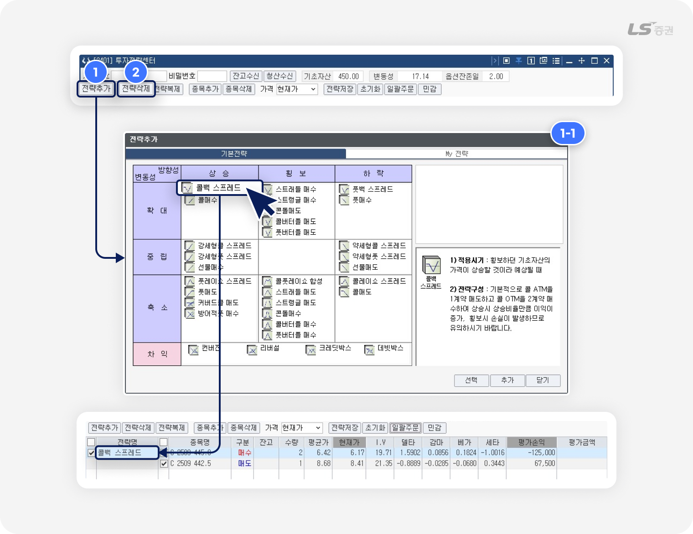
-
1
전략추가
- 클릭 시 전략추가 팝업(1-1번)에서 전략을 설정 및 포트폴리오 구성 영역에 추가할 수 있습니다.
- ‘기본전략’ 탭에서는 방향성, 변동성에 따라 분류된 전략을 선택할 수 있고, ‘My전략’ 탭에서는 원하는 전략을 직접 설정할 수 있습니다.
-
2
전략삭제
- 선택된 전략과 해당 종목 전체가 포트폴리오 구성 영역에서 삭제됩니다.
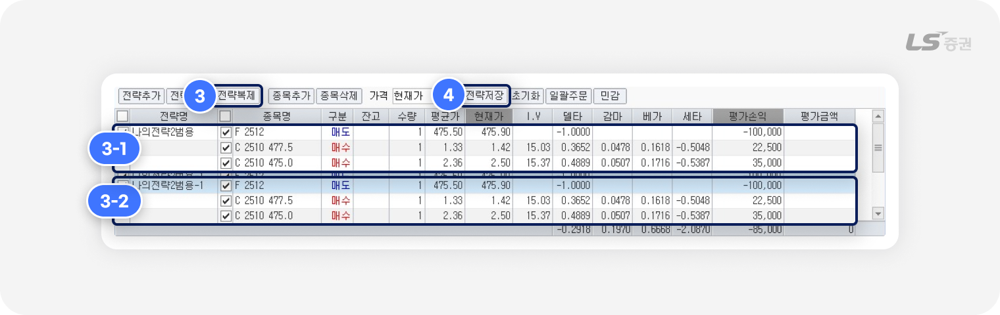
-
3
전략복제
- 선택한 기존 전략과 해당 종목 전체(3-1번)가 포트폴리오 구성 영역에 복제되어 (3-2번)과 같이 추가됩니다.
-
복제된 전략명은 기존 전략명과 중복되지 않도록 임의로 변경됩니다.
(예 : 전략명 ‘나의전략’ 복제 시 전략명 ‘나의전략-1’으로 목록에 추가됨)
-
4
전략저장
- 전략그룹명을 지정하여 새 전략으로 저장하거나 덮어쓰기를 할 수 있습니다.
- ‘종목코드 직접저장’ 체크 시 선택한 종목 코드가 직접 저장됩니다.
- ‘종목코드 직접저장’ 해제 시 ITM-1, 최근월물 등 조건이 저장되며, 전략 추가 시 설정한 조건에 맞는 종목이 자동 지정됩니다.
전략 종목 관리 기능
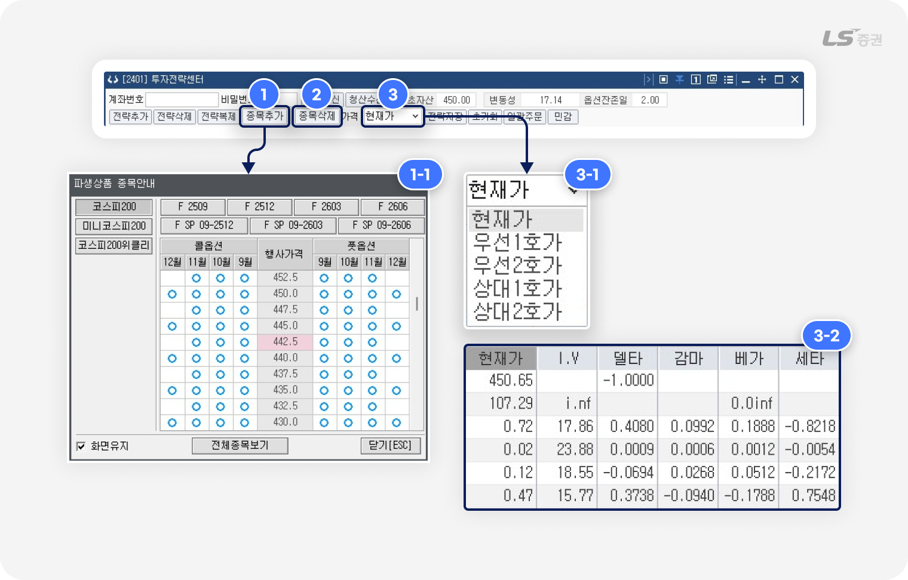
-
1
종목추가
- 파생상품 종목안내 팝업(1-1번)에서 선물/옵션 종목을 선택하여 포트폴리오 구성 영역에 추가할 수 있습니다.
-
2
종목삭제
- 포트폴리오 구성 영역에서 선택된 종목을 삭제할 수 있습니다.
- 종목이 모두 삭제되면 전략도 포트폴리오 구성 영역에서 삭제됩니다.
-
3
평가손익 기준가격 변경
- 평가손익 계산 기준이 되는 가격(3-1번)을 현재가, 우선1호가, 우선2호가, 상대1호가, 상대2호가 중 선택할 수 있습니다.
- 선택한 가격 기준을 바탕으로 포트폴리오 구성 영역(3-2번)에 표시되는 이론가, I.V(내재변동성), 델타, 감마, 베가, 세타 항목의 계산 방법이 변경됩니다.
일괄 주문 기능
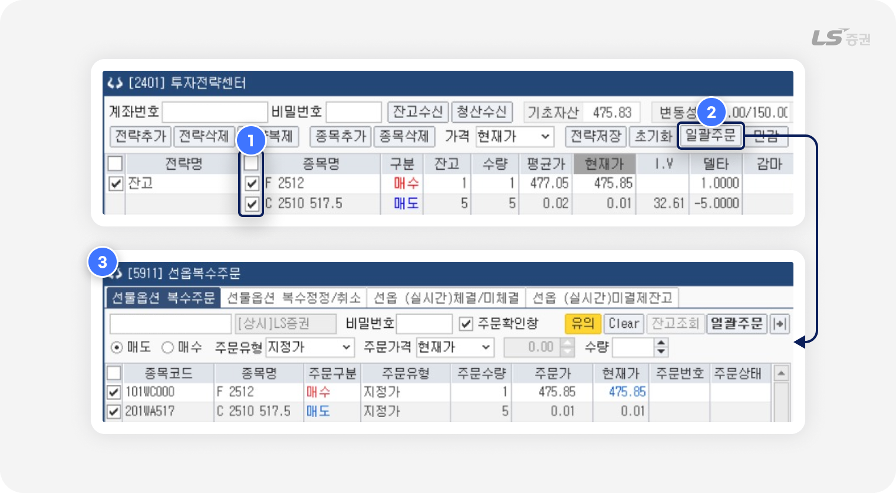
종목 체크(1번) 후 ‘일괄주문’ 버튼(2번) 클릭 시 [5911] 선옵복수주문(3번) 에서 주문을 일괄 접수할 수 있습니다.
민감도 설정
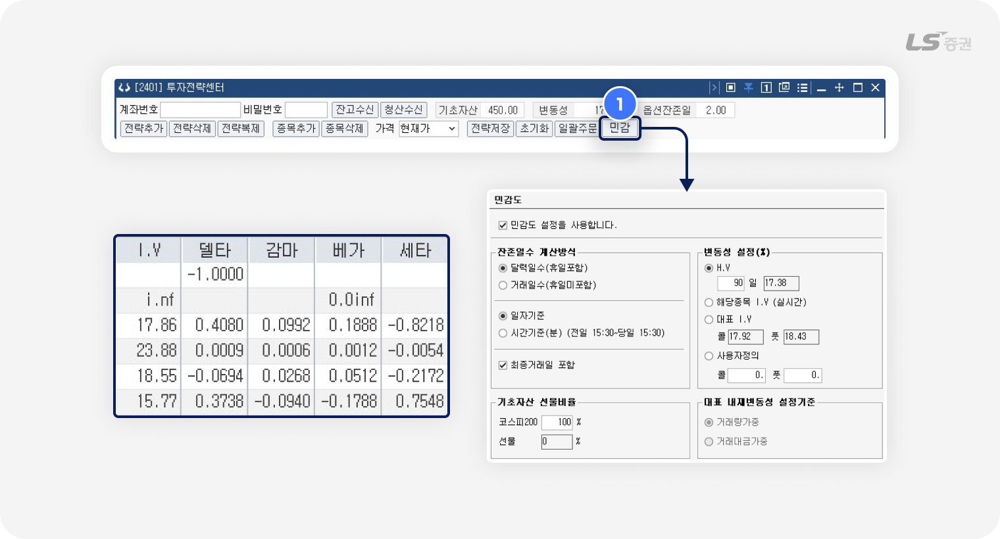
‘민감’ 버튼(1번)으로 포트폴리오 구성 영역에서 표시하는 민감도 지표인 델타, 감마, 베가, 세타의 계산에 사용하는 변수의 측정 기준을 설정할 수 있습니다.
참고해주세요!
- 민감도 설정 변경 후 목록에 반영되기까지 시간이 소요될 수 있습니다.
옵션 민감도와 관련 지표 해설
-
옵션 민감도(Greeks) :
시장 상황의 변화에 따라 옵션가격이 민감하게 움직이는 정도를 수치화한 값으로, 옵션의 미래를 예측하는 분석지표로 활용합니다.
옵션 민감도에는 델타, 감마, 베가, 세타, 로 등이 있습니다. -
델타(Delta) :
기초자산 가격 변화에 따른 옵션가격의 변화 정도
-
감마(Gamma) :
기초자산 가격 변화에 따른 옵션 델타의 변화 정도
-
베가(Vega) :
기초자산 가격의 변동성 1%p 변동에 대한 옵션가격의 변화 정도
-
세타(Theta) :
잔존일수 1일 경과에 대한 옵션가격의 변화 정도
-
로(Rho) :
금리의 1%p 변화에 따른 옵션가격의 변화 정도. 지표가 옵션 가격에 미치는 영향은 적은 편
-
I.V(내재 변동성) :
향후 가격 변동성에 대한 시장의 미래 기대치를 나타낸 지표로, I.V가 높을수록 시장 변동이 클 것으로 예상되며 옵션 프리미엄(가격)도 높아집니다.
옵션 매수자는 I.V가 낮을 때, 옵션 매도자는 I.V가 높을 때 시장에 진입하는 것이 대체로 유리한 편으로 인식합니다. -
H.V(역사적 변동성) :
과거 일정 기간 동안 기초자산 가격이 실제로 얼마나 변동했는지를 수치로 나타낸 지표입니다. H.V가 높을수록 과거에 가격 변동이 높았으며, 낮을수록 안정적인 흐름을 보였다는 뜻입니다. 내재변동성이 미래에 대한 시장의 기대치라면, 역사적 변동성은 실제로 과거에 일어난 움직임을 보여주는 지표로, 두 값을 비교하면 현재 옵션 가격이 합리적인지 판단하는 데 도움이 될 수 있습니다.
조건은 세밀하게, 예측은 알기 쉽게
03 전략 설정 (B영역)
투자전략 설정 기능
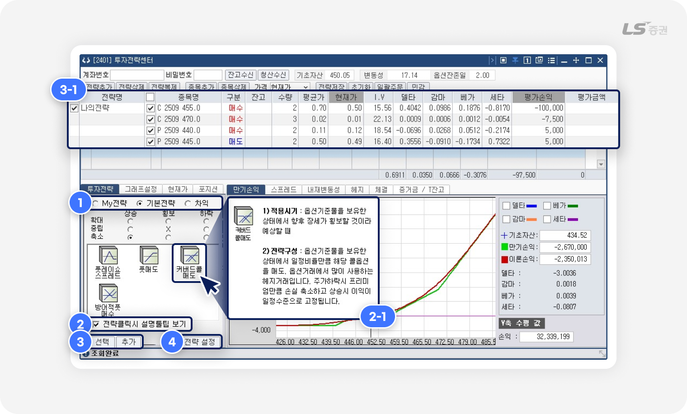
-
1
기본전략 · 차익전략 조회
- My전략, 기본전략, 차익 중 선택하여 시장 상황별 예시 전략을 조회할 수 있습니다.
-
2
전략 클릭 시 설명툴팁 보기
- 체크 시 전략을 클릭하면 우측에 적용시기와 전략구성에 대한 상세한 설명을 툴팁(2-1번)으로 확인할 수 있습니다.
-
3
전략 추가
- ‘선택’ 버튼 클릭 시 포트폴리오 구성 영역(3-1번)에서 기존 전략 및 종목이 전부 삭제된 후 해당 전략이 추가됩니다.
- ‘추가’ 버튼 클릭 시 포트폴리오 구성 영역(3-1번)에 기존 전략 및 종목이 유지된 채로 해당 전략이 추가됩니다.
-
4
전략 설정
- 클릭 시 전략추가 팝업에서 전략을 설정 및 포트폴리오 구성 영역에 추가할 수 있습니다.
My전략 설정 기능
투자전략 탭의 ‘추가’ 에서 전략을 설정하거나 포트폴리오 구성 영역에 추가할 수 있습니다.
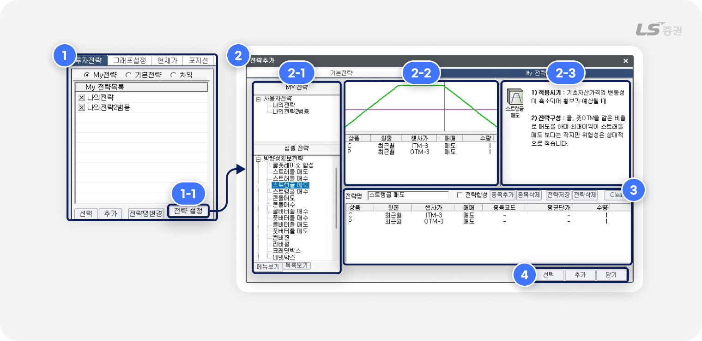
-
1
My 전략목록 관리
- 직접 설정한 전략을 조회 · 추가 · 변경 · 삭제할 수 있습니다.
- (1-1번) ‘전략 설정’ 버튼으로 '전략추가' 팝업(2번)에서 전략 세부내용을 관리할 수 있습니다.
-
2
전략 목록 조회 및 선택
- (2-1번) 전략 목록에서 직접 설정한 MY전략 또는 사전에 정의된 샘플 전략 중 선택할 수 있습니다.
- (2-2번) 영역에 선택한 전략의 만기손익 그래프와 구성 종목을 조회하며, (2-3번) 영역에서 해당 전략에 대한 설명을 확인할 수 있습니다.
-
3
전략 관리
- 전략명을 설정하여 전략을 새로 저장하거나 기존 전략을 변경 저장할 수 있습니다.
- ‘종목코드 직접저장’ 체크 시 선택한 종목 코드가 직접 저장됩니다.
버튼 클릭 시 포트폴리오 구성 영역(3-1번)에 기존 전략 및 종목이 유지된 채로 해당 전략이 추가됩니다. - ‘종목코드 직접저장’ 해제 시 ITM-1, 최근월물 등 조건이 저장되며, 전략 추가 시 설정한 조건에 맞는 종목이 자동 지정되어 포트폴리오 구성 영역에 추가됩니다.
- ‘전략합성’ 체크 상태에서 (2-1번) 영역의 전략 클릭 시, 기존 전략에 선택한 전략의 종목 요건이 추가되고, ‘전략합성’ 체크 해제 상태에서 (2-1번) 영역의 전략 클릭 시, 전략 관리 영역(3번)에 표시된 종목이 모두 삭제된 후 선택한 전략의 종목 요건이 추가됩니다.
-
4
전략 추가
- ‘선택’ 버튼 클릭 시 포트폴리오 구성 영역의 기존 전략 및 종목 목록이 전부 삭제된 후 해당 전략이 추가됩니다.
- ‘추가’ 버튼 클릭 시 포트폴리오 구성 영역에 존 전략 및 종목이 유지된 채로 해당 전략이 추가됩니다.
옵션 행사 가격, 이렇게 말해요
ITM (In The Money, 내가격)- 옵션 행사 시 이익을 얻을 수 있는 상태로, 실질 가치가 있기 때문에 프리미엄이 상대적으로 높습니다.
- 콜옵션은 행사가격 < 기초자산 현재가일 때, 풋옵션은 행사가격 > 기초자산 현재가일 때 ITM으로 표현합니다.
- 기초자산 현재가와 행사가격이 거의 동일한 상태로, 옵션 프리미엄에 실질가치는 거의 없고 시간가치가 대부분을 차지하며, 변동성 확대에 민감하게 반응하는 구간입니다.
- 콜옵션과 풋옵션 모두 행사가격 = 기초자산 현재가일 때 ATM으로 표현합니다.
- 옵션을 행사해도 이익을 얻을 수 없는 상태로, 실질 가치가 없기 때문에 프리미엄이 상대적으로 낮습니다.
- 콜옵션은 행사가격 > 기초자산 현재가, 풋옵션은 행사가격 < 기초자산 현재가일 때 OTM으로 표현합니다.
현재가 조회 및 주문 기능
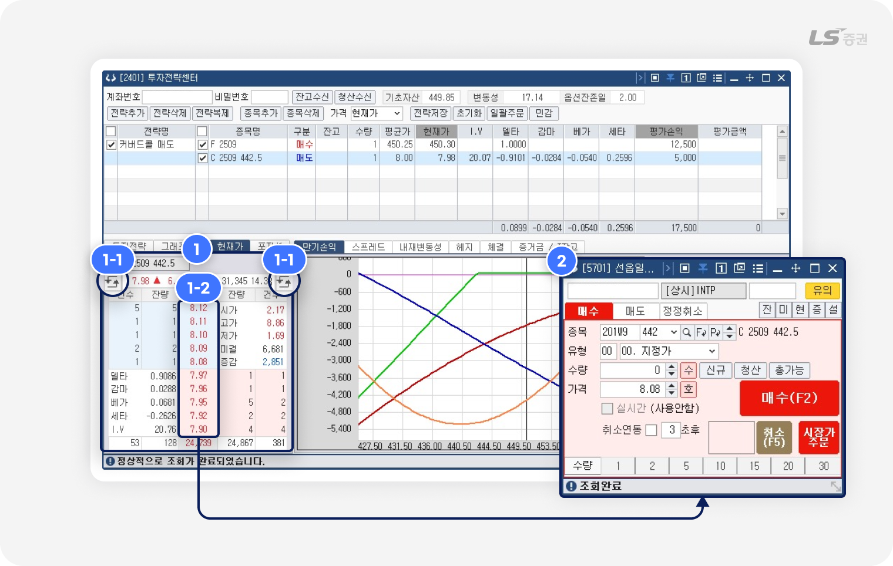
-
1
현재가 호가
- 포트폴리오 구성 영역에서 선택한 종목의 5단계 호가 및 시세 정보를 조회할 수 있습니다.
- (1-1번) 전환 버튼 클릭 시 호가창 좌하단 및 우하단의 시세 · 체결 · 차트 정보를 전환할 수 있습니다.
- (1-2번) 호가 더블클릭 시 [5700] 선옵일반주문 화면(2번)에서 주문을 접수할 수 있습니다.
포지션 조회 기능
포트폴리오 종목으로 구축한 포지션에 대한 현금흐름, 증거금, 민감도 지표 및 예상 손익을 시뮬레이션하고 분석할 수 있습니다.
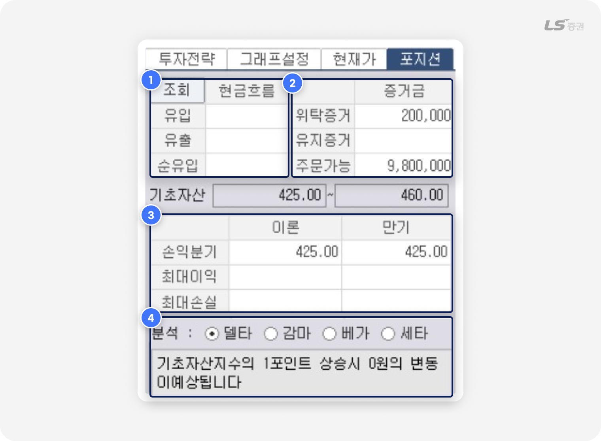
-
1
현금흐름
- 계좌잔고를 제외하고 신규로 추가된 종목에 대한 현금흐름을 나타냅니다.
- 유입 : 신규 추가 종목 중 옵션매도 평균가 × 수량
- 유출 : 신규 추가 종목 중 옵션매수 또는 선물매수 · 매도 평균가 × 수량
- 순유입 : 현금유입 - 현금유출
-
2
증거금
- 증거금의 증감에 따른 익일 증거금을 추정할 수 있습니다.
- 위탁증거금 : 좌측의 익일추정 위탁증거금 - 금일소요 위탁증거금
- 유지증거금 : 좌측의 익일추정 유지증거금 - 금일소요 유지증거금
- ※ 증거금 값은 추정치이므로 실제 증거금과의 오차가 발생할 수 있습니다.
-
3
손익추정
- 이론손익 및 만기손익의 손익분기점, 최대이익, 최대손실을 각각 조회할 수 있습니다.
-
4
민감도 분석
- 민감도 지표별 변수의 변동에 따른 예상 결과를 확인할 수 있습니다.
투자 검증은 꼼꼼하게, 계좌 점검도 꼼꼼하게
04 전략 시뮬레이션 (C영역)
만기손익 그래프
‘그래프설정’ 탭에서 만기손익 그래프 시뮬레이션에 사용되는 값을, '만기손익' 탭에서 그래프 표시 방법을 설정할 수 있습니다.
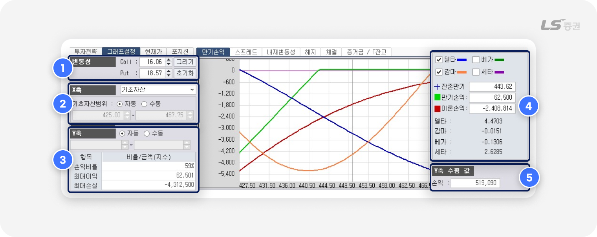
-
1
변동성
- 우측 만기손익 그래프에 표시할 이론가, 민감도 지표 등을 계산하는데 사용하는 변동성 값을 설정합니다.
- 그리기 버튼 : 변경한 변동성에 맞춰 만기손익 그래프를 갱신합니다.
- 초기화 버튼 : 콜옵션 및 풋옵션의 변동성 값을 대표 내재변동성(I.V) 값으로 재설정합니다.
-
2
X축
- X축 기준을 기초자산, 변동성, 잔존만기 중 선택할 수 있습니다.
- ‘자동’ 선택 시 ATM(등가격) ± 17.5 범위를 그래프에 표시합니다.
-
3
Y축
- 손익비율 : 현재 만기손익 그래프가 0보다 큰 값을 가지는 영역의 길이 ÷ 전체영역의 길이 × 100
- 최대이익 : 만기손익 그래프의 최대값을 표시합니다.
- 최대손실 : 만기손익 그래프의 최소값을 표시합니다.
-
4
민감도 지표 표시 설정
- 민감도 지표인 델타, 베가, 감마, 세타에 각각 체크 시 만기손익 그래프에 해당 값이 추가됩니다.
- 그래프 내에서 마우스를 움직이면 해당 위치의 기초자산, 만기손익, 이론손익, 민감도 지표의 값을 표시합니다.
-
5
Y축 수평 값
- Y축 수평 값 : 그래프 내 마우스가 위치한 지점의 손익값을 표시합니다.
스프레드 조회
선택한 종목의 스프레드 차트를 확인할 수 있습니다.
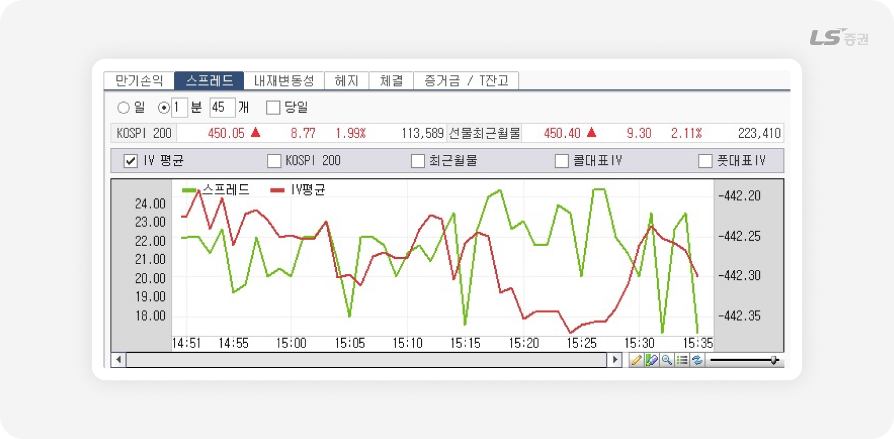
스프레드란?
선물·옵션 시장에서 매수 포지션과 매도 포지션의 가격 차이를 스프레드라고 합니다.
여러 계약을 동시에 매매하는 상황에서 전체 포지션 효과를 확인할 때 활용합니다.
선물·옵션 시장에서 매수 포지션과 매도 포지션의 가격 차이를 스프레드라고 합니다.
여러 계약을 동시에 매매하는 상황에서 전체 포지션 효과를 확인할 때 활용합니다.
양매도 등 변동성 매도전략의 경우 시장이 안정되어 스프레드 값이 하락할수록 이익이 커지고, 양매수 등 변동성 매수전략의 경우 시장 변동성이 커져 스프레드값이 상승할수록 이익이 커집니다.
※ [2402]스프레드 차트에서 스프레드 값의 추이를 더 자세하게 확인할 수 있습니다.
내재변동성 조회
포트폴리오에 구성한 옵션의 내재변동성(I.V) 추이를 확인하고, KOSPI200 지수 또는 최근월물과 비교할 수 있습니다.
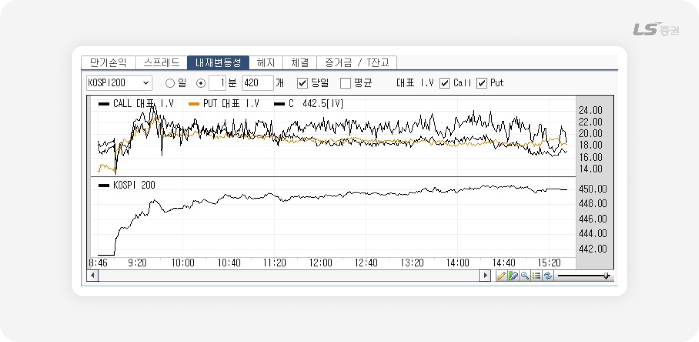
헤지 설정 기능
보유 포지션의 델타중립 또는 가격중립을 헤지하기 위한 요건을 설정하여 종목을 조회하고 주문할 수 있습니다.
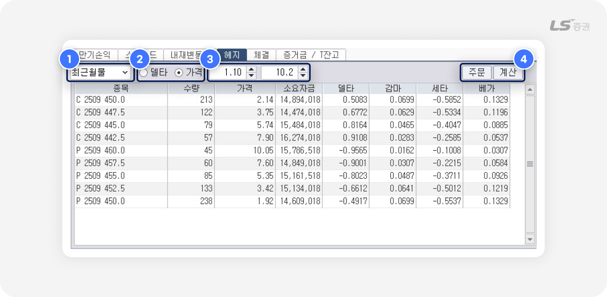
-
1
월물 선택
- 최근월물, 차근월물 중 선택할 수 있습니다.
-
2
헤지 기준 선택
- 델타중립, 가격중립 중 계산하고자 하는 요건을 선택할 수 있습니다.
-
3
종목 가격 범위 설정
- 검색할 가격의 범위를 설정할 수 있습니다.
-
4
종목 주문
- 종목 선택 후 클릭 시, [5911] 선옵복수주문(3번) 에서 주문을 일괄 접수할 수 있습니다.
헤지에 따른 전략 설정 방법
델타 중립 헤지- 기초자산 가격 변화에 따른 손익구조를 중립화시키는 전략으로, 가격 변동에 따른 방향성 리스크를 줄이고 변동성, 시간 경과 등에 따른 수익을 추구하는 헤지의 일종입니다.
- 종목별 델타 합계를 확인하며 헤지를 위한 종목을 추가하면 포지션을 델타 중립(Δ=0) 상태에 가깝게 설정할 수 있습니다.
- 시장 상황 변화에 관계없이 안정적인 수익을 추구하는 시장 중립 전략 중 하나로, 시장 전체의 위험인 체계적 리스크를 줄이고 매수와 매도 금액을 동일하게 책정해 무위험 이자율을 추구하는 헤지의 일종입니다.
- 가격 범위 설정 후 종목별 설정 수량을 확인하여 매수 · 매도 포지션을 균형있게 구성할 수 있습니다.
체결내역 / 증거금 및 잔고 조회
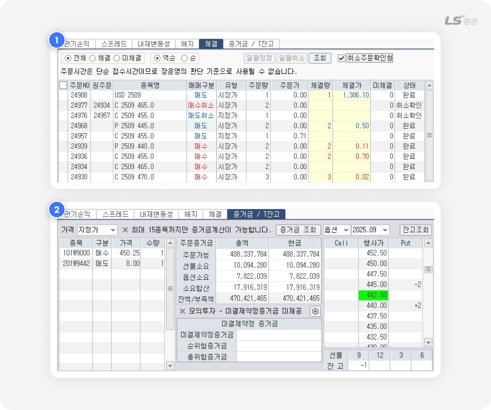
-
1
체결내역
- 당일 주문체결내역을 확인하고, 미체결 주문을 선택하여 정정하거나 취소할 수 있습니다.
-
2
증거금 / T잔고
- 증거금 현황를 조회하고 선물/옵션 보유잔고를 만기일 · 행사가 등 기준으로 조회할 수 있습니다.
지금까지 LS증권 투혼 HTS [2401] 투자전략센터 의 다양한 기능을 살펴보았습니다.
감사합니다!